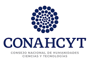

Fechas: noviembre 9 y 10, 2023
Sede: IIMAS, UNAM-CU
Ponente: Roberto Quezada, UAM-I
Ponente: Sofía Ortega, UdG
Ponente: Octavio Arizmendi, CIMAT
Ponente: Benjamín Itza, UAEH
Ponente: Miguel Ballesteros, IIMAS
Ponente: Luis Silva, IIMAS
| Horario | noviembre 9 | noviembre 10 |
|---|---|---|
| 10:00-11:00 AM | Roberto Quezada | Benjamín Itza |
| 11:00-11:30 AM | Café | Café |
| 11:30-12:30 AM | Sofía Ortega | Miguel Ballesteros |
| 12:30-2:00 PM | Comida | Comida |
| 2:00-3:00 PM | Luis Silva | |
| 3:00-3:30 PM | Café | |
| 3:30-4:30 PM | Octavio Arizmendi |
Este encuentro es parcialmente apoyado por CONAHCYT, proyecto CB-2017-2018-A1-S-9764.
